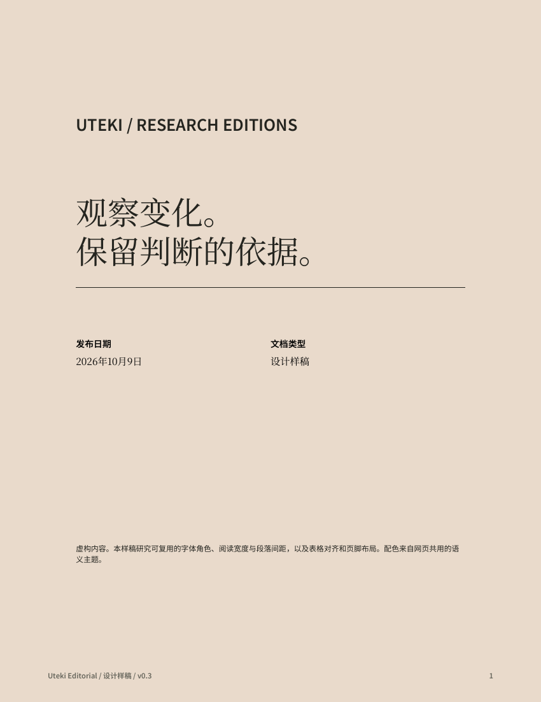
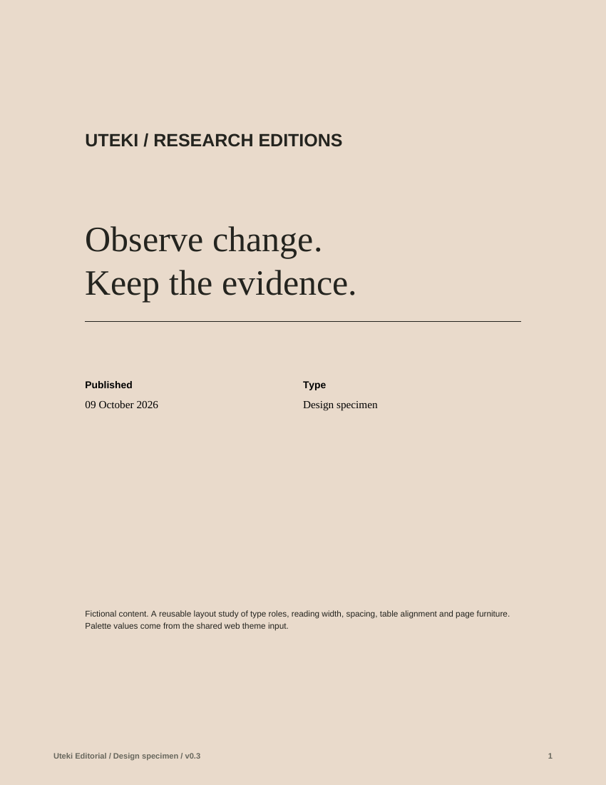
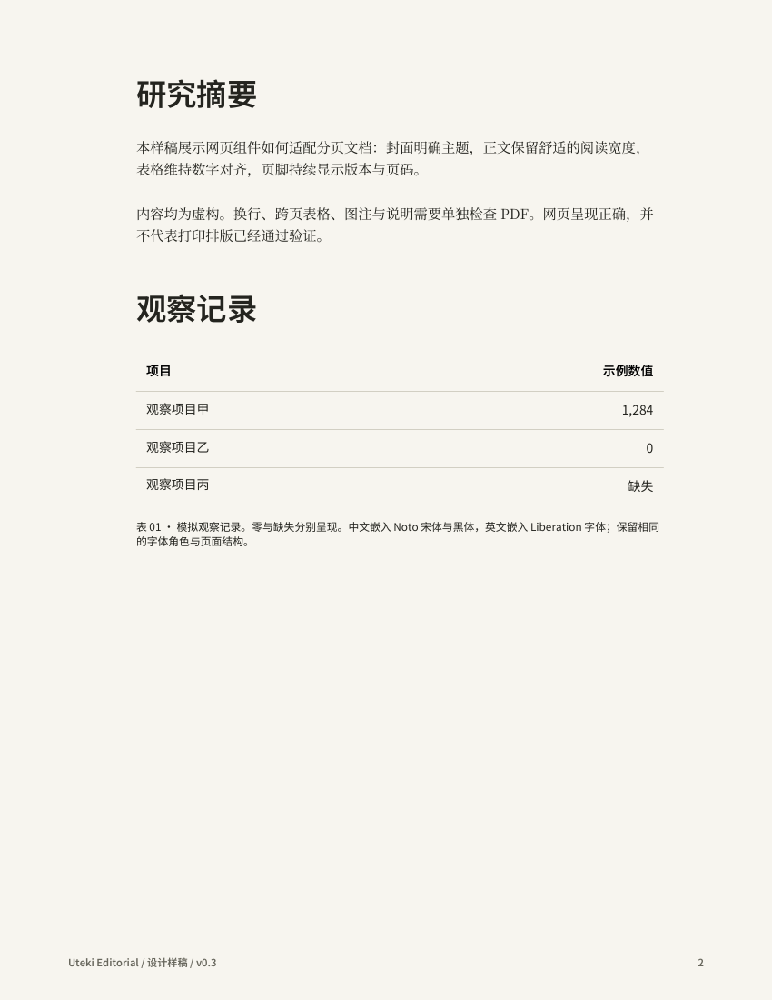
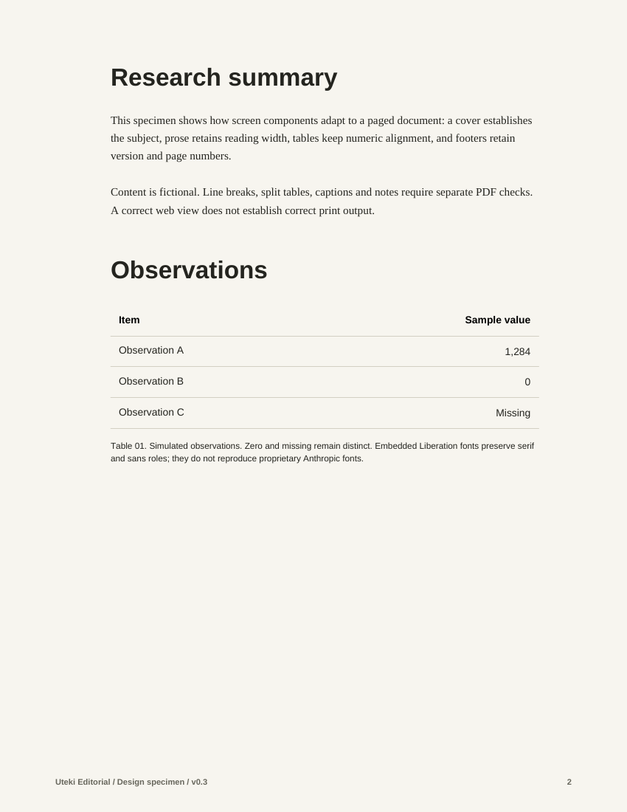

中英文共用封面、页边距、字号层级、数字列和页脚位置。中文明确嵌入宋体与黑体，用实际字宽处理换行。以下图片来自最终 PDF 的逐页渲染。




中英各两页，已逐页渲染查看；嵌入字体、文字提取、页内边界、标点、零与缺失检查通过。独立长标签、负值和中英混排检查通过；缺字、超长正文、数字列超宽与页脚碰撞明确失败，并保留既有成品。
这是有限的两页样稿。任意长度分页、跨页表格、复杂数学公式、跨平台打印仍未验收。内容为虚构示例；不是 Anthropic 官方组件。